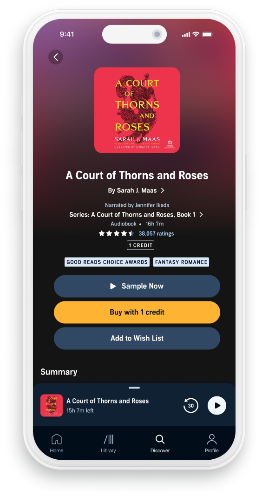
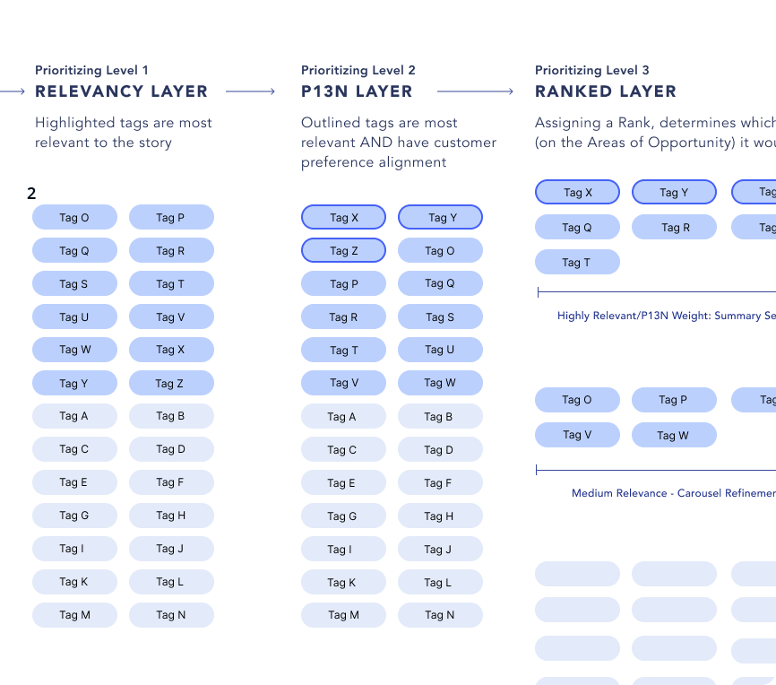

Case Study
Audible
Intentionally displaying back-end metadata to meet the customer mindset, aligning purpose and functionality across Audible's product detail page for 500K+ titles worldwide.

Audible listeners often rely on external sources to figure out what to listen to next. These customers miss out on the depth of Audible's unparalleled catalog because they have no meaningful way to browse and discover new content based on their current interests and needs.

The opportunity was twofold. Audible had rich back-end metadata that wasn't being leveraged strategically in how it surfaced to customers — there was room to build better metadata strategies and expand the summary section of tags to more accurately represent each audiobook title. Better tag representation meant better browsing, and better browsing meant higher conversion rates.
The project ran across Q2 with regular collaboration across UX leadership, a Project Manager, and a Director of Product, alongside scheduled UX walk-throughs with the engineering team — because improving the customer-facing tag experience required understanding both the front-end display and the back-end metadata model it drew from.

Back-End Improvements to Drive Front-End Results
Our customers often times, utilize the product detail page of a specific title they are interested in, as a means to launch what we call "continued discovery" or content wayfinding.
In this live title example, we can cross reference the book tags being showcased, with how it is structured within our back-end database (World Tree). Our back-end database functions linearly, when it comes to sub-titles or sub-genres (L2, L3) — this can drive customers down an audiobook genre they didn't originally intend or desire, disrupting a quality browsing experience.

Audible's existing tag taxonomy contains ~400 pre-defined labels with little room for vertical datasets to cross-communicate with each other, so content discovery from the Product Detail Page of Creativity & Business could lead down an unintended discovery path of Intimacy & Relationships.
The Mission
Project Highlights
Metric Driven Foundational Insight
Audible's PDP was limited to five tags. Those five items didn't always represent the best qualities of a given audiobook — customers consistently found them too unrelated to the title they were viewing, and that disconnect disrupted their continued browsing experience. A UX audit surfaced a critical behavioral insight: customers would arrive on a PDP, scroll through the description, reach the summary section, and use the tags there as a continued browsing tool — tapping to find a more relevant title rather than committing to the one in front of them. The tags weren't anchoring decisions. They were driving people away.
Discovery of Existing Experiences
The competitive research focused on analogous digital spaces — platforms outside of audiobooks that use tags and metadata in ways already familiar to customers, including Netflix, Spotify, Hulu, Pandora, Chirp, StoryGraph, Barnes & Noble, and Waterstones. The landscape teardown surfaced actionable insights on how the summary section could be restructured to better serve how customers naturally interact with tags during a browsing session.
A System for Relevant, Personalized Discovery
Two parallel tracks — back-end metadata strategies and front-end UX redesigns — converged into a system for how tags are categorized on the PDP and how customers interact with them to continue browsing. The result: six high-fidelity P13N prototypes, a ten-concept wireframe backlog extending the strategy across high-traffic flows, and a blue-sky LLM proposal to deduplicate and diversify tags at the source — increasing conversion through more accurate, relevant, and personalized tag displays.
Research
Two research tracks ran in parallel: a competitive landscape analysis and a focused UX audit of Audible's existing PDP experience.
Competitive Landscape
I focused the competitive research on analogous digital spaces — platforms outside of audiobooks that use tags and metadata in ways already familiar to customers. The landscape teardown surfaced actionable insights on how the summary section could be restructured to better serve how customers naturally interact with tags during a browsing session.
Structure
PDP Structural Framework
As part of the UX analysis, I broke the PDP down into three distinct sections — a structural framework that gave the entire design team a focused and intentional lens for proposing solutions or changes to specific areas of the page. This structure was shared out across the design organization at the end-of-sprint demo.
Risks & Constraints
- Tag over-saturation: surfacing too many items creates cognitive overload rather than useful orientation
- Tag duplication: overlapping labels from different back-end sources produce redundancy without adding browsing value

The three-section PDP framework in practice — tag taxonomy and the recommendation carousel it feeds.
From the Audiobook Title, a key opportunity was the "recommender carousel," to improve navigational control at this content discovery phase, by allowing listeners to refine the recommended titles by selecting specific metadata tags that previously weren't available to audible listener's.
Concept Development
Grounded in the UX analysis, mental model mapping, and the three-section PDP framework, concept development ran across two parallel tracks: back-end metadata strategies and front-end customer experience redesigns.
Back-End Metadata Strategies
I developed a set of strategies for how back-end data should be structured and prioritized before it ever surfaces to the customer. The goal was to ensure the tags displayed on a PDP represented the most relevant qualities of that specific title — not just what the system happened to have available.
Personalization
P13N Strategies
Personalization strategies adapt the tag display to the individual listener's context: browsing history, genre affinities, and listening patterns inform which metadata dimensions surface on a given PDP. A listener who consistently browses by narrator sees narrator prominence; a listener driven by theme sees thematic tags lead. The page meets the customer where they already are.

Relevancy, P13N, and Ranked layers determine which tags surface for a given listener.
Expected Outcome
A system for how tags are categorized on the PDP and how customers can interact with them to continue browsing toward their next title — increasing conversion rate through more accurate, relevant, and personalized tag displays.
The Solution
Two parallel tracks — back-end metadata strategies and front-end UX redesigns — converged into a system for how tags are categorized on the PDP and how customers interact with them to continue browsing.
Six High-Fidelity Prototypes
I built six high-fidelity prototypes showcasing three distinct iterations of a core concept — each exploring how a P13N strategy could make tags more relevant to both the customer and the specific audiobook title. Every prototype was paired with a user testing plan, defined questions, and a set of assumptions that needed validation before moving to implementation.
P13N Strategy Rules & Engineering Handoff
For the P13N strategies, I outlined the operational rules and guidelines governing how each would function, then communicated those directly to the engineering team to assess technical feasibility — creating a shared contract between design and engineering before any build decisions were made.
Wireframe Backlog
Beyond the core prototypes, I built a backlog of ten wireframe concepts mapping how specific P13N strategies apply across high-traffic user flows within the mobile application — ensuring the concept's value extended beyond the PDP to the broader browsing experience.
Blue Sky: LLM Future State
I developed a blue sky proposal for a language model–driven future state to automate and reduce duplicate tags on the PDP. Tags in the summary section and the recommendation section are pulled from two different back-end sources — the LLM would act as a convergence point prior to display on the front end, analyzing those tags for synonyms to avoid duplication, increase variability, and surface fresh titles. This prevented over-saturation of the same title appearing across different areas of the same screen. LLMs were already being implemented within the PDP for keywords pulled from customer reviews, making this a natural extension of existing infrastructure.

Final design touchpoints — discovery, search, and title detail carrying the new tag strategy across the app.
Validation
Six high-fidelity prototypes provided the basis for a structured user testing plan designed to validate the core P13N concepts before any implementation decisions were made.
User Testing Plan
I outlined the testing plan, defined the questions to be explored, and articulated the assumptions that needed to be validated across each of the three concept iterations. The plan was scoped to measure whether tag relevance improvements translated into a more confident browsing experience and a clearer path to conversion.
P13N Feasibility Assessment
The rules and guidelines governing each P13N strategy were shared directly with the engineering team to determine technical feasibility. These sessions surfaced implementation constraints that shaped the final recommendations, ensuring that design decisions were grounded in what could realistically be built within the existing back-end metadata architecture.
Next Steps for Implementation
Alongside the testing plan and feasibility assessment, I outlined a clear set of next steps for implementation — including which strategies to pursue first based on engineering complexity, the high-traffic user flows in the wireframe backlog most likely to benefit from early P13N application, and a phased rollout approach for the LLM future state.
500K+
Audiobook titles covered by the new tag strategy
6
High-fidelity P13N prototypes shipped
10
Wireframe concepts in the discovery backlog
1
Blue-sky LLM future-state proposal
Contributions
Six distinct deliverables produced across research, concept development, prototyping, and future-state strategy — each designed to serve a specific team and create lasting value beyond Q2.
Competitive Landscape & Teardown
A competitive analysis of analogous digital spaces using tags and metadata, surfacing actionable insights on how Audible's summary section could better align with existing customer mental models around tag-based browsing.
PDP Structural Framework
A three-section structural breakdown of the PDP shared across the full design organization at end-of-sprint demo — giving every designer a focused, intentional lens for proposing solutions to specific areas of the page.
Mental Model Map & Tag Framework
A customer mental model map and a framework for how tags connect to each other across the PDP — translating the UX audit's behavioral finding into a strategic structure for evaluating tag relevance and conversion impact.
6 High-Fidelity Prototypes
Six prototypes spanning three iterations of a core P13N concept, each paired with a user testing plan, defined questions, and assumptions requiring validation — ready for user research to run against real listeners.
10-Concept Wireframe Backlog
Ten wireframe concepts mapping how P13N tag strategies apply across high-traffic user flows in the mobile app — extending the metadata work beyond the PDP into the full browsing experience.
LLM Future State Strategy
A blue sky proposal for a language model–driven convergence layer between the PDP's summary and recommendation tag sources — automating deduplication, increasing tag variability, and surfacing fresh titles. Rooted in LLM infrastructure already live within the PDP.
Get in Touch
Like what
you see?
Let's talk about your next project.